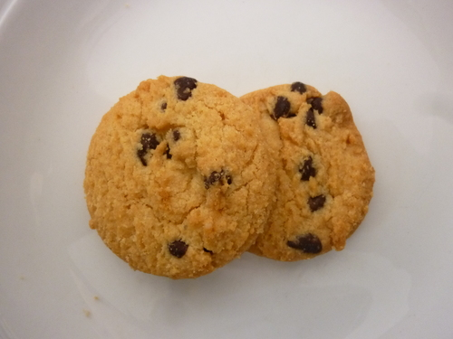

<div class="container earthandbeyond"><div id="contents" class="col-md-12 main-content"><span  class="ch-nr-3"/>
        <div  class="section"><h1 class="title" id="toc-id-0">Mining of mineral resources</h1><div class="teachers-guide">
<p/>

<p><strong>Chapter overview</strong></p>

<p>2 weeks</p>

<p>In this chapter we build on what was done in the previous two chapters. After learning that rocks contain minerals, we now explore how the minerals may be extracted so that they may be utilised. Mining plays an important role in the wealth of a country. Learners will therefore learn about the mining industry in South Africa and the impact that mining may have on a country and the globe.</p>

<p>The mining industry is an important industry in South Africa. It involves a number of industries working together. Exploration is followed by excavation, which is followed by crushing and milling to reduce the size of the rocks. This is followed by extraction (removing the valuable minerals from the ore) and finally refining. Each of these processes are discussed in this chapter. The idea is not that learners should know all the terms off by heart, but rather that they grasp the bigger picture. A number of different processes are needed with each one dependent on the efficiency of the step before. The flow diagram exercise towards the end of the chapter is meant to consolidate the chapter content and help learners realise the continuous nature of many industrial processes.</p>

<p>A research project is also included in this chapter. Let the learners choose one industry and research the different aspects of mining covered in this chapter for their chosen industry. The following mining industries can be researched: gold, iron, copper, diamond, phosphate, coal, manganese, chromium or platinum group metals (PGMs). Learners could also choose their own.</p>

<p>The projects need to be handed out in the beginning of the term/chapter. Learners can then present their projects at the end of the chapter, by doing a poster or an oral, or both. For the orals, we suggest you work with the language department so that learners can be assessed there as well. If posters are done, then we suggest you put these up for display for the whole school to see. Learners can stand at their posters during breaks where learners from other grades have the opportunity to come and have a look at their work and ask questions about it.</p>

<p>The project has a two-way purpose, firstly for learners to continue learning about doing research, finding information and presenting the information to others, and secondly, for learners to explore careers in this industry. Part of what they should include in their research is a section on careers in mining.</p>

<p>Allow for some time at the beginning of this chapter to introduce the topic and the research project, and at the end for some feedback from the research projects.</p>

<p>3.1 Exploration: Finding minerals (0.5 hours)</p>
<table><tr><td><p><strong>Tasks</strong></p></td><td><p><strong>Skills</strong></p></td><td><p><strong>Recommendations</strong></p></td></tr><tr><td><p>Activity:</p>

                
<p>Mining in South Africa</p></td><td><p>Finding information,</p>

                
<p>presenting information,</p>

                
<p>group work, analysis, synthesis, application</p></td><td><p>CAPS suggested</p>

                
<p>Project to be handed out at the beginning of the chapter.</p></td></tr><tr><td><p>Activity: Minerals and the right to own them</p></td><td><p>Debating, discussing</p></td><td><p>Optional</p></td></tr></table><p>3.2 Extracting ores (0.5 hours)</p>
<table><tr><td><p><strong>Tasks</strong></p></td><td><p><strong>Skills</strong></p></td><td><p><strong>Recommendations</strong></p></td></tr><tr><td><p>Activity: Gold mining in South Africa</p></td><td><p>Recall, comprehension, application</p></td><td><p>Suggested</p></td></tr></table><p>3.3 Crushing and milling (0.5 hours)</p>

<p>(Perform demonstration with choc-chip biscuits in class to demonstrate crushing and milling)</p>

<p>3.4 Separating minerals from waste (1.5 hours)</p>
<table><tr><td><p><strong>Tasks</strong></p></td><td><p><strong>Skills</strong></p></td><td><p><strong>Recommendations</strong></p></td></tr><tr><td><p>Activity: Separating beads</p></td><td><p>Group work, design, experimentation</p></td><td><p>CAPS suggested</p></td></tr><tr><td><p>Activity: Separating peanuts and raisins</p></td><td><p>Prediction, discovery, observation, explanation</p></td><td><p>Suggested</p></td></tr></table><p>3.5 Refining minerals (1 hour)</p>
<table><tr><td><p><strong>Tasks</strong></p></td><td><p><strong>Skills</strong></p></td><td><p><strong>Recommendations</strong></p></td></tr><tr><td><p>Activity: Separating lead from lead oxide</p></td><td><p>Observation, application</p></td><td><p>CAPS suggested</p></td></tr></table><p>3.6 Mining in South Africa (2 hours)</p>
<table><tr><td><p><strong>Tasks</strong></p></td><td><p><strong>Skills</strong></p></td><td><p><strong>Recommendations</strong></p></td></tr><tr><td><p>Activity: Create your own mining map</p></td><td><p>Translating information, application</p></td><td><p>Suggested</p></td></tr><tr><td><p>Activity: Drawing a mining flow diagram</p></td><td><p>Translating information, ordering information</p></td><td><p>Suggested</p></td></tr><tr><td><p>Activity: What would we do without mining?</p></td><td><p>Formulating an argument, group work, presentation skills, summarising information, synthesis</p></td><td><p>Suggested</p></td></tr></table><p><strong>Note:</strong> Allow for time at the end of this chapter for learners to present their research projects.</p>

<p/>
</div><div class="note col-md-10" data-type="keyquestions"><ul data-class="ListBulleted"><li>How do we know where to mine?</li>
<li>How do we get the valuable ore-rich rocks out of the ground?</li>
<li>How do we get the minerals or metals out of the ore?</li>
<li>How do we separate minerals from waste rock?</li>
<li>How do we refine minerals?</li>
<li>Where in South Africa are the mineral-rich deposits suitable for mining?</li>
<li>What do we mine in South Africa?</li>
<li>What is the impact of mining?</li>
</ul></div><div class="note col-md-6" data-type="newwords"><ul data-class="ListBulleted"><li>mineral</li>
<li>ore</li>
<li>PGM</li>
</ul></div>
<p>In the previous two chapters you have learnt about the spheres of the Earth especially the lithosphere. The lithosphere consists of rocks, which contain minerals. Minerals are natural compounds formed through geological processes. A mineral could be a pure element, but more often minerals are made up of many different elements combined. Minerals are useful chemical compounds for making new materials that we can use in our daily lives. In this chapter we are going to look at how to get the minerals out of the rocks and in a form that we can use. This is what the mining industry is all about.</p>

<p>Mining is a very important industry in South Africa. We have a lot of mineral resources in our country and a lot of people depend on mining for a living.</p>

<p>You already know that minerals in rocks cannot be used. Many processes are used to make minerals available for our use. We need to locate the minerals. We must determine whether these concentrations are economically viable to mine. Rocks with large concentrations of minerals, are called <strong>ores</strong>. Mining depends on finding good quality ore, preferably within a small area.</p>

<p>The next step is to get the rocks which contain the mineral out of the ground. Once the ore is on the surface, the process of getting the mineral you want out of the rock can start. Once the mineral is separated from the rest of the rock, the mineral needs to be cleaned so that it can be used.</p>

<p>This process can be represented by the following flowchart diagram:</p>
<figure id="gd-idm634096"></figure><p>In this chapter we will look at each of the steps in more detail. You will also apply what you learn about mining to one specific mining industry. This is explained in the research project below.</p>
<div class="activity" data-type="Activity"><h1 class="title">Mining in South Africa</h1><div class="teachers-guide">
<p/>

<p>This project should be handed out in the beginning of the chapter so that learners have time to work on it. Information for the project is provided in the sections in the chapter, but learners also need to find information on their own. Guiding questions are provided to help learners.</p>

<p>You can use Assessment Rubric 8 (Poster), 9 (Oral presentation) and 10 (Group work) to assess this project.</p>

<p/>
</div>
<p><strong>INSTRUCTIONS:</strong></p>
<ol data-class="ListEnumerated"><li>Work in groups of three.</li>
<li>Choose one mining industry in South Africa and find information about the industry of your choice.</li>
<li>Choose from the following list: gold, iron, coal, phosphate, manganese, diamond, chromium, copper and the platinum group metals (PGMs).</li>
<li>Present your findings to the class in an oral and a poster.</li>
<li>Use the following questions to guide your research:

<p/>
<ol data-class="ListEnumerated"><li>How do geologists and engineers know where to mine for the mineral of your choice?</li>
<li>What type of mining method is used in this industry?</li>
<li>What processes are used to get the rock out of the ground?</li>
<li>What processes are used to reduce the size of the rocks?</li>
<li>How is the mineral removed from the ore?</li>
<li>How is the mineral separated from its compound?</li>
<li>How is the mineral refined?</li>
<li>Where in South Africa is this mineral mined?</li>
<li>What has the impact of this mining industry been on South Africa?</li>
<li>What has the impact of this mining industry been on the environment?</li>
<li>What careers are involved in this mining industry?</li>
</ol></li>
</ol><p/>
</div>
<div class="section"><h2 class="title" id="toc-id-1">Exploration: Finding minerals</h2><div class="note col-md-6" data-type="newwords"><ul data-class="ListBulleted"><li>exploration</li>
<li>remote sensing</li>
<li>geophysical methods</li>
<li>geochemical methods</li>
</ul></div>
<p>One of the most important steps in mining is to find the minerals. Most minerals are found everywhere in the lithosphere, but in very, very low concentrations, too low to make mining profitable. For mining to be profitable, high quality ore needs to be found in a small area. Mining <strong>exploration</strong> is the term we use for finding out where the valuable minerals are.</p>

<p>Today technology helps mining geologists and surveyors to find high quality ore without having to do any digging. When the geologists and surveyors are quite sure where the right minerals are, only then do they dig test shafts to confirm what their surveying techniques have suggested.</p>
<div class="section"><h3 class="title" id="toc-id-2">Methods of exploration</h3>
<p>In all these methods we use the properties of the minerals and our knowledge of the lithosphere to locate them underground, without going underground ourselves. For example, iron is magnetic so instruments measuring the changes in the magnetic field can give us clues as to where pockets of iron could be.</p>

<p>Exploration methods are used to find, and assess the quality of mineral deposits, prior to mining. Generally a number of explorative techniques are used, and the results are then compared to see if a location seems suitable for mining.</p>

<p><strong>Remote sensing</strong> is the term used to gain information from a distance. For example, by using radar, sonar and satellite images, we can obtain images of the Earth's surface. These images help us to locate possible mining sites, as well as study existing mining sites for possible expansion.</p>
<figure><figcaption class="caption">This image covers an area of 15 &#215; 19 km and was taken from the NASA research satellite<em>Terra</em>. It shows the mine at <a data-class="ExternalLink" href="http://en.wikipedia.org/wiki/Inner_Mongolia">Baiyun Ebo</a> China, which is the site of almost half the world's rare earth element production.</figcaption></figure><div class="note col-md-6" data-type="didyouknow">
<p>Rare earth elements are a set of 17 elements on the Periodic Table, including the fifteen lanthanides and scandium and yttrium. Despite their names, they are found in relatively plentiful amounts in the Earth's crust.</p>
</div><div class="note col-md-6" data-type="takenote">
<p>Find where the lanthanides are located on the Periodic Table by looking in the front cover of your workbook.</p>
</div>
<p><strong>Geophysical methods</strong> make use of geology and the physical properties of the minerals to detect them underground. For example, diamonds are formed deep in the Earth at very high temperatures, in kimberlite pipes of igneous rock. The kimberlite pipe is a carrot shape. The first kimberlite pipe to be detected was in Kimberley in South Africa. The pipe was mined, eventually creating the Big Hole.</p>
<div class="note col-md-6" data-type="didyouknow">
<p>Kimberlite pipes are the most important source of diamonds in the world. They are named after the town of Kimberley, where a where a 16.7 g diamond was found in 1871, starting the the diamond rush.</p>
</div><figure><figcaption class="caption">The Kimberley Big Hole was a diamond mine until 1914 when it closed down, and is now a tourist attraction.</figcaption></figure><div class="note col-md-6" data-type="didyouknow">
<p>The Kimberley Big Hole is considered to be the largest hand-dug excavation on Earth at 463 m wide and 240 m deep. About 22 million tons of earth were excavated, which yielded 3000 kg of diamonds.</p>
</div>
<p><strong>Geochemical methods</strong> combine the knowledge of the chemistry of the minerals with the geology of an area to help identify which compounds are present in the ore and how much of it is present. For example, when an ore body is identified, samples are taken to analyse the mineral content of the ore.</p>
<div class="activity" data-type="Activity"><h1 class="title">Minerals and the right to own them</h1><div class="teachers-guide">
<p/>

<p>This is an optional activity to conduct as a class discussion, or as small group discussions.</p>

<p/>
</div>
<p>Many indigenous people, such as the San, share the same central belief that the land and all it produces are for all the people to use equally.</p>

<p>When colonialists arrived, they realised the potential mineral wealth of South Africa as gold, and later diamonds, were discovered. They ruthlessly took land from the local people wherever minerals were found, completely ignoring their right to ownership and access.</p>

<p>De Beers purchased the mining rights and closed all access to diamond mining areas. Anyone entering the area would be prosecuted and the sale of so-called 'illegal' diamonds was heavily punished. Other large mining companies have tried to claim the right to the minerals that they mine.</p>

<p>In groups or as a class discuss the following:</p>
<ol data-class="ListEnumerated"><li>Should a few select people hold the right to the land and the minerals in it?</li>
<li>Who owns the minerals?</li>
<li>Should big corporations hold these rights?</li>
<li>What role should government play in allocating/administering mining rights?</li>
</ol><p>Use the following space to write down some of the main points of your discussion. </p><hr/><hr/><hr/><hr/><hr/><p/>
</div></div></div><div class="section"><h2 class="title" id="toc-id-3">Extracting ores</h2><div class="note col-md-6" data-type="newwords"><ul data-class="ListBulleted"><li>topsoil</li>
<li>overburden</li>
<li>excavation</li>
<li>rehabilitation</li>
<li>slurry</li>
</ul></div>
<p>Once the ore body has been identified, the process of getting the ore out of the ground begins. There are two main methods of mining - surface mining and underground mining. In some locations a combination of these methods is used.</p>
<div class="section"><h3 class="title" id="toc-id-4">Surface mining</h3>
<p>Surface mining is exactly what the word says - digging rocks out from the surface, forming a hole or pit. In South Africa, this method is used to mine for iron, copper, chromium, manganese, phosphate and coal.</p>
<div class="note col-md-6" data-type="takenote">
<p>Surface mining is also known as open pit or open cast mining.</p>
</div><figure><figcaption class="caption">An open pit coal mine.</figcaption></figure><div class="note col-md-6" data-type="didyouknow">
<p>South Africa is one of the seven largest coal producing countries in the world. A quarter of the coal mined in South Africa is exported, mostly through Richards Bay.</p>
</div>
<p>Let's look at coal as an example. For surface mining, the minerals need to be close to the surface of the Earth. Most of the coal found in South Africa is shallow enough for surface mining. Usually the rocks are present in layers. To expose the coal layer, the layers above it need to be removed. The vegetation and soil, called the <strong>topsoil</strong>, is removed and kept aside so that it can be re-deposited in the area after mining. If there is a layer of rock above the coal face, called the <strong>overburden</strong>, this is also removed before the coal can be <strong>excavated</strong>. Once all the coal has been removed, the overburden and topsoil are replaced to help in restoring the natural vegetation of the area. This is called <strong>rehabilitation</strong>.</p>
<div class="note col-md-6" data-type="didyouknow">
<p>There is a growing emphasis on the need to rehabilitate old mine sites that are no longer in use. If it is too difficult to restore the site to what it was before, then a new type of land use might be decided for that area.</p>
</div><figure><figcaption class="caption">Surface mining coal and mine rehabilitation.</figcaption></figure><p>In Phalaborwa in Limpopo province, copper ore is mined using open pit mining. This open pit is one of the world's largest open pit mines. It is 2 km across and the largest man-made hole in Africa.</p>
<div class="note col-md-6" data-type="visit">
<p>Read more about the Phalaborwa Mine.<a data-class="ExternalLink" href="http://bit.ly/1gXdBD3">bit.ly/1gXdBD3</a></p>
</div><figure><figcaption class="caption">Copper ore from Phalaborwa Mine.</figcaption></figure><p>When you mine you are digging into solid rock. The rock needs to be broken up into smaller pieces before it can be removed. Holes are drilled in the rock and explosives, like dynamite, are placed inside the holes to blast the rock into pieces. The pieces are still very large and extremely heavy. The rocks are loaded onto very large haul trucks and removed. Sometimes the rocks (ore) are crushed at the mining site to make them easier to transport.</p>
<div class="note col-md-6" data-type="didyouknow">
<p>Mining trucks are enormous. They are up to 6 meters tall, that's higher than most houses. These trucks can carry 300 tons of material and their engines have an output 10-20 times more powerful than a car engine.</p>
</div><div class="note col-md-6" data-type="visit">
<p>Coal surface mining - watch some of the heavy machinery in action.<a data-class="ExternalLink" href="http://bit.ly/17V4HfU">bit.ly/17V4HfU</a></p>
</div>
<p>Do you remember learning about how coal is formed? What is coal made from?</p>

<p/><hr/><hr/><div class="teachers-guide">
<p/>

<p>This is revision of what learners have covered in previous grades. Coal is formed from fossilised plant matter which is compressed and heated over millions of years to eventually form coal.</p>

<p/>
</div><figure><figcaption class="caption">A mining haul truck being loaded with coal.</figcaption></figure></div><div class="section"><h3 class="title" id="toc-id-5">Underground mining</h3><div class="section"><h4 class="title">Shaft mining</h4>
<p>Often the minerals are not found close to the surface of the Earth, but deeper down. In these cases underground mining, also called shaft mining, is used. Examples of underground mining in South Africa are mining for diamonds, gold and sometimes the platinum group metals (PGM).</p>
<div class="note col-md-6" data-type="didyouknow">
<p>The PGMs are six transition metals usually found together in ore. They are ruthenium (Ru), rhodium (Rh), palladium (Pd), osmium (Os), iridium (Ir) and platinum (Pt). South Africa has the highest known reserves of PGMs in the world.</p>
</div><figure><figcaption class="caption">Extracting ore.</figcaption></figure><div class="note col-md-6" data-type="takenote">
<p>Igneous and metamorphic rock is found where gold is mined.</p>
</div>
<p>Sometimes the ore is very deep, which is often the case with diamonds or gold ore. In these cases mine shafts go vertically down and side tunnels make it possible for the miners and equipment to reach the ore. A structure called the headgear is constructed above the shaft and controls the lift system into the vertical shaft. Using the lift, it can take miners up to an hour to reach the bottom of the shaft.</p>
<div class="note col-md-6" data-type="didyouknow">
<p>Coal miners used to take a canary with them down the mines. If the canary died, they knew that oxygen levels were being dangerously depleted and that it was not safe to remain underground.</p>
</div><figure><figcaption class="caption">Old headgear at the Kimberley Mine in the Northern Cape</figcaption></figure><p>The TauTona Mine in Carletonville, Gauteng is the world's deepest mine. It is 3,9 km deep and has 800 km of tunnels. Working this deep underground is very dangerous. It is very hot, up to 55&#176;C. To be able to work there, the air is constantly cooled to about 28 &#176;C using air-conditioning vents.</p>
<div class="note col-md-6" data-type="didyouknow">
<p>South Africa is a leader in the field of deep underground mining as we have several mines deeper than 3 km.</p>
</div><div class="activity" data-type="Activity"><h1 class="title">Gold mining in South Africa</h1>
<p>South Africa is a world leader in the gold mining industry. We have been doing gold mining for more than a century and our mines are the deepest in the world. Until 2010 we were the leading producer of gold in the world. Gold is a lustrous, precious metal which has a very high conductivity.</p>

<p><strong>QUESTIONS:</strong></p>
<div class="exercises"><div class="problemset"><div class="entry"><div class="problem">
              
<p/>

<p>What mining method is used to mine for gold?</p>

            
<p/><hr/></div><div class="solution">
<p/><p/>

            
<p>Underground mining or shaft mining.</p>

            
<p/>
</div></div><div class="entry"><div class="problem">
              
<p/>

<p>What type of rock is found where gold is mined?</p>

            
<p/><hr/></div><div class="solution">
<p/><p/>

            
<p>Igneous rock, or metamorphic rock.</p>

            
<p/>
</div></div><div class="entry"><div class="problem">
              
<p/>

<p>What is gold used for?</p>

            
<p/><hr/><hr/></div><div class="solution">
<p/><p/>

            
<p>Jewelry, ornaments and decoration, electronics in computers and cell phones.</p>

            
<p/>
</div></div><div class="entry"><div class="problem">
              
<p/>

<p>Do you think gold mining is dangerous? Why do you say so?</p>

            
<p/><hr/><hr/><hr/></div><div class="solution">
<p/><p/>

            
<p>Yes it is, the mines are very deep, of the deepest in the world. Mining deep underground is difficult and dangerous because of the heat and lack of oxygen. Rocks can also collapse because of the pressure.</p>

            
<p/>
</div></div><div class="entry"><div class="problem">
<p>Provide labels for numbers 1-7 in the following diagram.</p>
<figure id="gd-idm11681040"></figure><p/>

<p/><hr/><hr/><hr/><hr/><hr/><hr/><hr/></div><div class="solution">
<p/><p/>

            
<p>1. Air supply and air conditioners/heat control</p>

            
<p>2. Lift to take miners into the mine or down the vertical shaft</p>

            
<p>3. Headgear</p>

            
<p>4. Horizontal tunnel</p>

            
<p>5. Removal of ore</p>

            
<p>6. Mine dump</p>

            
<p>7. Ore body</p>

            
<p/>
</div></div></div></div>

<p/>
</div>
<div class="note col-md-6" data-type="visit">
<p>Underground mining.<a data-class="ExternalLink" href="http://bit.ly/16GcyTI">bit.ly/16GcyTI</a></p>
</div></div><div class="section"><h4 class="title">Room and pillar method</h4>
<p>One of the methods used in underground mining is called room and pillar, and is often used for mining coal. Part of the mine is open to the surface and part of it is underground. The coal face is dug out, but pillars of coal are left behind to keep the tunnels open and support the roof. Machines called continuous miners are used to remove the coal. The coal is loaded onto conveyor belts and taken up to the surface for further crushing.</p>
<figure><figcaption class="caption">A machine called a continuous miner at work at the coal face.</figcaption></figure><figure><figcaption class="caption">Room and pillar mining</figcaption></figure><p>What happens once the ore has been removed from the crust by mining?</p></div></div></div><div class="section"><h2 class="title" id="toc-id-6">Crushing and milling</h2><div class="teachers-guide">
<p/>

<p>This section looks at methods to get very large rocks crushed and ground until it is as fine as powder. The first concept that needs to come across here is that minerals are <u>inside</u> rocks and by crushing rocks, the minerals are <u>exposed</u> at the surface of the rock fragment. Only then can chemicals be used to extract the mineral. An analogy with a choc chip biscuit is used to demonstrate this principle. The second concept is that a lot of energy is needed to break rocks. This is a very energy-intensive step in the mining industry, and one of the reasons why mining is so expensive.</p>

<p>This lesson can be introduced by demonstrating the principle explained above to the class. Use choc chip biscuits and crush them with your fingers. This is to get the minerals (choc chips) out. The next step is to separate the choc chips from the crumbs - also a step in the mining process.</p>

<p/>
</div>
<p>Mineral crystals are spread throughout rocks, just like chocolate chips are spread throughout a choc chip biscuit. Sometimes we can see the chocolate chips from the outside, but most of the time the chips are not visible because they are inside the biscuit.</p>
<figure><figcaption class="caption">Ore is like choc chip biscuits where the minerals are spread through the rocks.</figcaption></figure><p>The only way to find out how many choc chips there are is to crush the biscuit. In the same way we can sometimes see mineral crystals from the outside of the rock, but mostly we don't know what minerals there are and and what concentrations are inside the rock. The only way to find out is to break the rock into smaller and smaller pieces.</p>
<figure><figcaption class="caption">The ore needs to be crushed, as a choc chip biscuit, to get the minerals out.</figcaption></figure><p>Once we have crumbled the choc chip biscuit, the chocolate pieces can be separated from the crumbs. In the same way in the mining process the valuable minerals can be separated from the unwanted rock. The unwanted rock is called waste rock.</p>
<figure><figcaption class="caption">The choc chips are separated from the rest of the biscuit, just as minerals are extracted from the rock.</figcaption></figure><p>Let's look at an example. You have learnt in the previous chapter that copper minerals are found in rocks. In South Africa, the Bushveld Igneous Complex is an area which stretches across the North West and Limpopo Provinces. Igneous rock with high mineral content is found here. Here they mine for PGMs, chromium, iron, tin, titanium, vanadium and other minerals using open pit and underground mining. The rocks from the mines are transported by conveyor belts to crushers. Jaw crushers and cone crushers break the huge rocks into smaller rocks.</p>
<figure><figcaption class="caption">Jaw crusher at a mine. The rocks are fed into the funnel and crushed as the two sides move back and forth.</figcaption></figure><div class="note col-md-6" data-type="visit">
<p>Short videos showing jaw crushers at work<a data-class="ExternalLink" href="http://bit.ly/1f172ev">bit.ly/1f172ev</a> and a ball mill turning <a data-class="ExternalLink" href="http://bit.ly/1am13lf">bit.ly/1am13lf</a></p>
</div>
<p>The smaller rocks are then moved to mills where large rod mills and ball mills grind them further into even smaller pieces until it is as fine as powder.</p>
<div class="teachers-guide">
<p/>

<p>You can demonstrate this to your class by placing some pieces of broken up biscuit into a plastic container with some marbles or ball bearings. Place the lid on the container and then shake it so that the marbles help to crush and break up the biscuit pieces even further.</p>

<p/>
</div><figure><figcaption class="caption">A ball mill.</figcaption></figure><figure><figcaption class="caption">Inside a ball mill, the balls move round in a circle as the mill turns, crushing the ore into a powder.</figcaption></figure><p>This process of reducing the size of the rocks requires a lot of energy. Just image how hard it is to break a rock. How much more energy do you think is needed to crush a rock until it is like sand? This is one of the steps in the mining process that is very expensive because energy is needed to drive the process.</p>

<p>Most minerals are found as compounds in rocks. Only a few minerals are found in their pure form, in other words not bound to any other element. Examples of minerals found in their pure form are gold and diamonds (diamonds consist of the element carbon).</p>
<figure><figcaption class="caption">A rough diamond crystal embedded in rock.</figcaption></figure><figure></figure><p>Some rocks are used as is, and do not need to be crushed into powder, or involved in minerals extraction. For example phosphate rock itself can be used as a fertiliser, or it can be used to make phosphoric acid. Sand, or the mineral silicon dioxide (SiO<sub>2</sub>) is used in the building industry. Coal found in sedimentary rock, is crushed into the appropriate size and used as fuel for electricity generation or the iron-making process.</p>
<figure><figcaption class="caption">Lumps of coal can be used directly as a fuel. However some coal is first washed to make it into 'high grade coal'. It can also be sorted into various sizes, depending on what the fuel is required for.</figcaption></figure></div><div class="section"><h2 class="title" id="toc-id-7">Separating minerals from waste</h2><div class="note col-md-6" data-type="newwords"><ul data-class="ListBulleted"><li>electromagnets</li>
<li>panning</li>
<li>composition</li>
<li>density separation</li>
<li>size separation</li>
<li>magnetic separation</li>
<li>flotation</li>
</ul></div>
<p>Before the minerals can be used, they need to be separated from the waste rock. A number of different separation techniques are used. These techniques are based on the properties of the minerals. Different minerals are often found together, for example copper and zinc, gold and silver or the PGMs. A combination of techniques are used to separate the minerals from the waste and then the minerals from each other.</p>
<div class="note col-md-6" data-type="takenote">
<p>You might remember some of the different methods of physical separation from previous grades. This was covered in Matter and Materials.</p>
</div><div class="section"><h3 class="title" id="toc-id-8">Hand sorting</h3>
<p>Sorting by hand is not a very effective method to separate out the minerals you want. It can only be used in exceptional situation or by individuals, for example many people mine for alluvial diamonds by hand in rivers in Angola. It is a cheap and easy process to do individually, but it is not feasible on an industrial scale.</p></div><div class="section"><h3 class="title" id="toc-id-9">Magnetic separation</h3>
<p>Iron is a metal with magnetic properties. Iron ore can be separated from waste rock by using magnetic separation techniques. Conveyor belts carry the ore past strong <strong>electromagnets</strong> which remove the magnetic pieces (containing the iron) from the non-magnetic waste. How do you think this works? Study the following diagram</p>
<div class="note col-md-6" data-type="takenote">
<p>An electromagnet, as we have learnt in Energy and Change, is a type of magnet in which the magnetic field is produced by electric current.</p>
</div><figure id="gd-idm4051984"></figure><p>Which container, the left or the right, will contain the magnetic iron ore and which one will contain the non-magnetic waste? Label this on the diagram and provide a reason for your answer below.</p>

<p/><hr/><hr/><div class="teachers-guide">
<p/>

<p>The labelled diagram is provided here:</p>
<figure id="gd-idp1250944"></figure><p>The magnetic iron ore will fall into the container on the right as it is attracted to the magnetic roller and travels around the bend of the magnet for a longer period, whereas the non-magnetic waste drops straight down due to gravity, as the magnet turns, and falls into the first container on the left.</p>

<p/>
</div></div><div class="section"><h3 class="title" id="toc-id-10">Density separation</h3>
<p>One of the first methods for mining gold was that of <strong>panning</strong>, a technique where ore is mixed with water and forms a suspension. When it is shaken, the dense particles of gold sink to the bottom and could be removed.</p>
<div class="note col-md-6" data-type="didyouknow">
<p>When gold was discovered in Pilgrim's Rest, Mpumalanga in the 1840s they mostly used panning to separate the gold nuggets ore ore from sand and stones in rivers.</p>
</div><figure><figcaption class="caption">Panning.</figcaption></figure><div class="activity" data-type="Activity"><h1 class="title">Separating beads</h1><div class="teachers-guide">
<p/>

<p>Let the learners work in groups of three. The value of the activity is the process of doing it, and not so much the end product. Learners will want to separate every single bead in the process and this is not possible, nor does it happen in the mining industry. Valuable materials do end up as waste.</p>

<p>When choosing beads to separate, ensure that there are a variety of shapes, round and flat, small and large. Most plastic beads will float on water, but metallic ones will sink. The piece of carpet is provided to make the tray rough, but still smooth enough for round beads to roll off, and flat beads to stick. Choose the smallest flattest beads to represent the valuable materials.They will remain on the carpet in the tray more easily.</p>

<p>Learners might want to use the cups to separate by size. This is a great option. If magnetic beads are included, provide the learners with a magnet.</p>

<p>To separate by density, learners can drop the beads into water - some beads will float and others will sink. To separate by size, learners can use the mesh and let the smaller beads fall through into the cup, with the larger ones staying behind.</p>

<p>As an extension, include some beads which are identical in shape and size, but different colours. At this point, learners will want to hand sort them. Tell learners that hand sorting, although effective and is used by individuals, it is a very time-consuming process and therefore almost never done in the mining industry. Ask learners if they have any other ideas. This is where chemical properties come in. For example, tell learners that one colour bead reacts with an acid and the other does not. Get learners to discuss how they would then separate the beads knowing this. A real world example is that silver reacts with chlorine, but gold does not.</p>

<p>This activity can also be done as a class demonstration and some flow diagrams can be designed. The learners can then vote which one they think would work best.</p>

<p/>
</div>
<p>In this activity you are going to separate beads as an analogy for separating minerals in the mining industry.</p>

<p><strong>MATERIALS</strong></p>
<ul data-class="ListBulleted"><li>collection of beads, different shapes, sizes, densities and magnetic properties</li>
<li>paint tray</li>
<li>piece of carpet</li>
<li>plastic cup and mesh</li>
<li>magnet</li>
<li>water</li>
</ul><div class="teachers-guide">
<p/>

<p>Optional is a sheet of paper for each learner for planning and making observations.</p>

<p/>
</div><figure><figcaption class="caption">Different plastic and metal beads.</figcaption></figure><figure><figcaption class="caption">Materials needed for the activity.</figcaption></figure><p><strong>INSTRUCTIONS:</strong></p>
<ol data-class="ListEnumerated"><li>Work in groups of three.</li>
<li>Your teacher will indicate to you which bead is the valuable mineral. You need to design a process to separate the valuable mineral from the waste rock.</li>
<li>Draw a flow diagram for the process you have designed. Consider using a number of steps in different orders. You may use the same technique more than once.</li>
<li>Also remember that repeating a technique improves the efficiency of it. Think about changing the order in which you separate the beads to see if you can find a more efficient process.</li>
<li>Hand sorting may NOT be used.</li>
</ol><div class="note col-md-6" data-type="takenote">
<p>Although hand sorting is an effective method, it is very time consuming which makes it an expensive process, so it is almost never used in the mining industry, except for diamond sorting.</p>
</div>
<p>Use the following space to draw a final flow diagram of the process your group designed. <br/><br/><br/><br/><br/><br/><br/><br/><br/><br/><br/><br/><br/><br/><br/></p>

<p><strong>QUESTIONS:</strong></p>
<div class="exercises"><div class="problemset"><div class="entry"><div class="problem">
            
<p/>

<p>How did you sort the beads based on size?</p>

          
<p/><hr/><hr/></div><div class="solution">
<p/><p/>

          
<p>Learner-dependent answer. Learners could have used the mesh and let the smaller beads fall through.</p>

          
<p/>
</div></div><div class="entry"><div class="problem">
            
<p/>

<p>How did you sort the beads based on shape?</p>

          
<p/><hr/><hr/></div><div class="solution">
<p/><p/>

          
<p>Learner-dependent answer. For example, some beads might have been flat and would therefore stick to the carpet, whereas the round ones would roll off.</p>

          
<p/>
</div></div><div class="entry"><div class="problem">
            
<p/>

<p>How did you sort the beads based on density?</p>

          
<p/><hr/><hr/></div><div class="solution">
<p/><p/>

          
<p>Some beads float and others sink.</p>

          
<p/>
</div></div><div class="entry"><div class="problem">
            
<p/>

<p>How did you sort the beads based on magnetic properties?</p>

          
<p/><hr/><hr/></div><div class="solution">
<p/><p/>

          
<p>The magnet can be used to lift magnetic beads out of the other beads.</p>

          
<p/>
</div></div></div></div>

<p/>
</div>

<p>As you have seen in the activity, separating a mixture can be done using different properties, depending on the different properties of the beads. There could be a number of different ways to separate the beads depending on which type of bead you want to select (considered to be the most valuable ones).</p>

<p>Size separation is used frequently in mining to classify ore. For example, when iron ore is exported, it needs to be a certain size to be acceptable to the world market. Coal that is used in power stations also needs to be a certain size so that it can be used to generate electricity effectively.</p>

<p>Density separation is used widely in mining, and you will see why in the next section.</p></div><div class="section"><h3 class="title" id="toc-id-11">Flotation</h3>
<p>Flotation makes use of density separation, but in a special way. Chemicals are added to change the surface properties of the valuable minerals so that air bubbles can attach to them. The minerals are mixed with water to make a <strong>slurry</strong>, almost like a watery mud. Air bubbles are blown through the slurry and the minerals attach to the bubbles. The air bubbles are much less dense than the solution and rise to the top where the minerals can be scraped off easily.</p>
<figure><figcaption class="caption">Separating minerals by flotation</figcaption></figure><div class="activity" data-type="Activity"><h1 class="title">Separating peanuts and raisins</h1>
<p>You will be working in pairs for this activity. You need to observe carefully and explain your observations.</p>
<div class="note col-md-6" data-type="visit">
<p>A video of this activity can be found here.<a data-class="ExternalLink" href="http://bit.ly/19OFkj9">bit.ly/19OFkj9</a></p>
</div><div class="teachers-guide">
<p/>

<p>The focus of this activity is to illustrate the principle of flotation and for learners to practice explaining their observations. They will have to apply what they know about density to be able to explain what they see. This activity can also be modified by letting the learners predict what they think will happen before they add the peanuts and raisins to the tap water; and again before they add it to the soda water. The outcome might not be what they expected and the value of the activity is for them to try to explain what they see.</p>

<p>The peanuts will float because they are oily and the bubbles stick to them. This reduces the density of the peanuts so that they are able to float.</p>

<p>The activity can be done as a classroom demonstration, but it is more effective if done by the learners in pairs. The one learner can use the tap water, and the other the soda water. A suggestions is to buy packets of peanuts and raisins separately, otherwise oil from the peanuts can coat the raisins, causing some of the raisins to rise. The raisins can also be rinsed in acidulated water because they are often dressed with oil before sale for visual enhancement.</p>

<p/>
</div>
<p><strong>MATERIALS:</strong></p>
<ul data-class="ListBulleted"><li>peanuts</li>
<li>raisins</li>
<li>soda water</li>
<li>tap water</li>
<li>two tall glasses or beakers</li>
</ul><p><strong>INSTRUCTIONS</strong>:</p>
<ol data-class="ListEnumerated"><li>Pour tap water into the first glass until it is about &#190; full.</li>
<li>Add a handful of the peanuts and raisin mixture to the water and note what happens.</li>
<li>Pour soda water into the second glass until it is about &#190; full.</li>
<li>Add a handful of the peanuts and raisin mixture to the soda water and note what happens.</li>
<li>Write down your observations.</li>
<li>Explain your observations.</li>
</ol><figure><figcaption class="caption">Peanuts and raisins.</figcaption></figure><figure><figcaption class="caption">Separating peanuts and raisins.</figcaption></figure><figure><figcaption class="caption">Looking down into the water filled beaker.</figcaption></figure><p>Use the following space to record and explain your observations.</p>

<p/><hr/><hr/><hr/><hr/><hr/><div class="teachers-guide">
<p/>

<p>Learners should observe that the peanuts and raisins sink to the bottom in the tap water and remain there since they are more dense than water. However, in the soda water, the peanuts and raisins initially sink to the bottom, but then the peanuts start to rise. Small bubbles from the soda water attach to the peanuts' oily surface and cause them to rise to the surface.</p>

<p/>
</div>
<p/>
</div>

<p>The methods mentioned so far are all <strong>physical separation methods</strong>. Sometimes they are sufficient to separate minerals for use, like coal or iron ore. But more often the element that we are looking for is found as a chemical compound, and so will have to be separated by further chemical reactions. For example, copper in Cu<sub>2</sub>S or aluminium in Al<sub>2</sub>O<sub>3</sub>. What is the name for the force that is holding atoms together in a compound?</p>

<p/><hr/><div class="teachers-guide">
<p/>

<p>A chemical bond.</p>

<p/>
</div>
<p>Once the compound is removed from the ore, the element we want needs to be separated from the other atoms by chemical means. This process forms part of refining the mineral, as you will see in the next section.</p>
<div class="note col-md-6" data-type="visit">
<p>Ore to more: Copper mining.<a data-class="ExternalLink" href="http://bit.ly/1g8EKBR">bit.ly/1g8EKBR</a></p>
</div></div></div><div class="section"><h2 class="title" id="toc-id-12">Refining minerals</h2><div class="note col-md-6" data-type="newwords"><ul data-class="ListBulleted"><li>bloomery</li>
<li>bellows</li>
<li>blast furnace</li>
<li>brittle</li>
<li>slag</li>
</ul></div>
<p>There are many different methods used to concentrate and refine minerals. The choice of methods depends on the <strong>composition</strong> of the ore. Most of the methods however, make use of chemistry to extract the metal from the compound or remove impurities from the final product. We will discuss the extraction of iron from iron ore as an example.</p>

<p><em>
            <strong>Extraction of iron</strong>
          </em></p>

<p>Iron atoms are found in the compounds FeO, Fe<sub>2</sub>O<sub>3</sub> and Fe<sub>3</sub>O<sub>4</sub> and in rocks like haematite and magnetite. South Africa is the seventh largest producer of iron ore in the world. Iron has been mined in South Africa for thousands of years. South African archaeological sites in Kwa-Zulu Natal and Limpopo provide evidence for this. Evidence of early mining activities was found in archaeological sites dating mining and smelting of iron back to the Iron Age around 770 AD.</p>
<div class="note col-md-6" data-type="didyouknow">
<p>Iron appears to have been smelted in the West as early as 3000 BC. The start of the Iron Age in most parts of the world coincides with the first widespread use of bloomeries.</p>
</div>
<p>The first iron mining techniques used charcoal which was mixed with iron ore in a <strong>bloomery</strong>. When heating the mixture and blowing air (oxygen) in through <strong>bellows</strong>, the iron ore is converted to the metal, iron. The chemical reaction between iron oxide and carbon is used here to produce iron metal. The balanced chemical equation for the reaction is:</p>

<p>2Fe<sub>2</sub>O<sub>3</sub> + 3C &#8594; 4Fe + 3CO<sub>2</sub></p>
<figure><figcaption class="caption">A small bloomery.<a data-class="ExternalLink" href="http://en.wikipedia.org/wiki/File:%C5%9Awi%C4%99to_%C5%9Al%C4%85ska_piec_p.jpg">http://en.wikipedia.org/wiki/File:%C5%9Awi%C4%99to_%C5%9Al%C4%85ska_piec_p.jpg</a></figcaption></figure><div class="note col-md-6" data-type="takenote">
<p>A blast furnace is a huge oven where iron ore is burned with oxygen and coal to produce the metal, iron.</p>
</div><div class="note col-md-6" data-type="visit">
<p>Simple animation showing a blast furnace.<a data-class="ExternalLink" href="http://bit.ly/16HWGLb">bit.ly/16HWGLb</a></p>
</div>
<p>This extraction method is still used today. The bloomery is replaced with a <strong>blast furnace</strong>, but the chemistry is still the same. Iron ore, a type of coal called coke (which contains 85% carbon) and lime are added to the top of the blast furnace. Hot air provides the oxygen for the reaction. The temperature of a blast furnace can be up to 1200&#176;C. The reaction takes place inside the furnace and molten iron is removed from the bottom. Lime (calcium carbonate or CaCO<sub>3</sub>) is added to react with the unwanted materials, such as sand (silicon dioxide or SiO<sub>2</sub>). This produces a waste product called <strong>slag</strong>. The slag is removed from the bottom and used for building roads. Iron is used to make steel. Hot gases, mainly carbon dioxide, escape at the top of the furnace.</p>
<figure><figcaption class="caption">Blast furnace.</figcaption></figure><div class="note col-md-6" data-type="visit">
<p>An interesting video showing how a traditional pit furnace worked. A group of archeologists spent a weekend building an iron furnace and then used it to extract iron. Part 1:<a data-class="ExternalLink" href="http://bit.ly/1ablJX7">bit.ly/1ablJX7</a> Part 2: <a data-class="ExternalLink" href="http://bit.ly/1dky3sR">bit.ly/1dky3sR</a></p>
</div><div class="activity" data-type="Activity"><h1 class="title">Separating lead from lead oxide</h1><div class="note col-md-6" data-type="takenote">
<p>Remember from Matter and Materials that lead (II) oxide is formed from the reaction between lead (a metal) and oxygen.</p>
</div><div class="teachers-guide">
<p/>

<p>For safety reasons, this experiment should rather be demonstrated. Ensure that you wear safety glasses when performing this experiment. It is quite easy to do, but takes a long time to actually react. The blow pipe needs to redirect the flame into the hollow in the block. Blow through the top of the blue part of the flame. Use a straw to extend the blow pipe so that you can stand a bit further away from the flame. Ensure that a steady stream of heat gets right into the middle of the mixture so that it glows red hot for a while. The video link in the Visit box also shows how the experiment is performed (and the mistakes made). The product can clearly be seen in the video.</p>

<p/>
</div>
<p>In this demonstration you are going to react lead(II) oxide with carbon. This is similar to the process used in iron mining where iron ore is reacted with coke (carbon) to form iron metal.</p>
<figure><figcaption class="caption">Lead(II) oxide.</figcaption></figure><div class="note col-md-6" data-type="visit">
<p>Making lead from lead oxide.<a data-class="ExternalLink" href="http://bit.ly/16imQH8">bit.ly/16imQH8</a></p>
</div>
<p><strong>MATERIALS:</strong></p>
<ul data-class="ListBulleted"><li>lead(II) oxide (red)</li>
<li>charcoal block</li>
<li>Bunsen burner</li>
<li>blowpipe</li>
<li>spatula</li>
<li>safety glasses</li>
</ul><p><strong>INSTRUCTIONS:</strong></p>
<ol data-class="ListEnumerated"><li>Use safety glasses in this experiment.</li>
<li>Use the spatula to scrape a hollow in the charcoal block. Ensure that the loosened carbon remains in the hollow.</li>
<li>Add an equivalent amount of lead oxide to the carbon in the hollow.</li>
<li>Add a drop or two of water to make a paste.</li>
<li>Use a blow pipe to direct the flame of the Bunsen burner into the hollow where the lead(II) oxide-carbon paste is. Create a steady flow of air through the flame.</li>
<li>Keep the flame directed onto the paste for 2-3 minutes.</li>
<li>Observe if any changes has taken place. If not, continue blowing for another minute.</li>
</ol><p><strong>QUESTIONS:</strong></p>
<div class="exercises"><div class="problemset"><div class="entry"><div class="problem">
          
<p/>

<p>What have you observed? Were there any colour changes? Describe your observations.</p>

        
<p/><hr/><hr/><hr/></div><div class="solution">
<p/><p/>

        
<p>The mixture heats up and starts to glow. At the end of the reaction the red colour of the lead oxide has changed to a grey colour and a solid pellet of lead has formed.</p>

        
<p/>
</div></div><div class="entry"><div class="problem">
          
<p/>

<p>Write a balanced equation for the reaction that has taken place.</p>

        
<p/><hr/></div><div class="solution">
<p/><p/>

        
<p>2PbO + C &#8594; 2Pb + CO<sub>2</sub></p>

        
<p/>
</div></div><div class="entry"><div class="problem">
          
<p/>

<p>Carbon dioxide is formed in this reaction. What would the impact of this be if the reaction is done on large scale?</p>

        
<p/><hr/><hr/></div><div class="solution">
<p/><p/>

        
<p>Carbon dioxide is a greenhouse gas and large scale production will negatively influence the environment and contribute to global warming.</p>

        
<p/>
</div></div></div></div>

<p/>
</div>

<p>In this experiment carbon was used to remove the oxygen from the lead(II) oxide. The carbon and oxygen form carbon dioxide, and the lead is left behind as a metal. This is the same process that is used in iron extraction in the blast furnace, that we discussed above. Coke, which is mainly carbon, removes the oxygens from the iron(III) oxide to form carbon dioxide and leaves behind the iron metal.</p>
<div class="note col-md-6" data-type="visit">
<p>Watch an experiment to extract copper from copper ore.<a data-class="ExternalLink" href="http://bit.ly/16HX0cI">bit.ly/16HX0cI</a></p>
</div><div class="section"><h3 class="title" id="toc-id-13">Refining iron</h3>
<p>The iron that is formed in the blast furnace often contains too much carbon - about 4% where it should contain not more than 2%. Too much carbon makes the iron <strong>brittle</strong>. To improve the quality of the iron, it needs to be refined by lowering the amount of carbon. This is done by melting the metal and reacting the carbon with pure oxygen to form carbon dioxide gas. In this way the carbon is burned off and the quality of the iron improves. The iron can now be used in the steel-making process. Carbon reacts with oxygen according to the following chemical equation:</p>

<p>C + O<sub>2</sub> &#8594; CO<sub>2</sub></p>
<div class="note col-md-6" data-type="visit">
<p>Steel is a very import material in the modern world. A series of videos on iron and steel can be found here<a data-class="ExternalLink" href="http://bit.ly/1cnWys7">bit.ly/1cnWys7</a></p>
</div>
<p>Most minerals go through chemical extraction and refining processes to purify them for use in making materials and other chemical products. These are then distributed to where they are needed, for example, coal is distributed to coal power stations and slag is distributed to construction groups for building roads. The mining industry supplies the manufacturing industry and the chemical industry with its raw materials, for example iron is distributed to steel manufacturing industries.</p></div></div><div class="section"><h2 class="title" id="toc-id-14">Mining in South Africa</h2>
<p>Long before diamonds were discovered in the Kimberley area and the Gold Rush in Pilgrim's Rest and Witwatersrand areas in the late 1800s, minerals have been mined in South Africa. At Mapungubwe in the Limpopo Province evidence of gold and iron mining and smelting was found which dates back to the early 11th century AD. However, it was the large scale mining activities that accelerated the development of the country.</p>

<p>South Africa has a wealth of minerals. We are the world's largest producers of chromium, manganese, platinum, vanadium and andalusite; and the second largest producer of ilmenite, palladium, rutile and zirconium. We are the third largest coal exporter, fifth largest diamond producer and seventh largest iron ore producer. Up to 2010 we were the world's largest gold producer, but our gold production has declined steadily over a number of years. We are currently fifth on the list of gold producers.</p>
<figure><figcaption class="caption">The Okiep Copper Mine, South Africa, established in the 1850s, is one of the richest bodies of copper ore ever found to this day.</figcaption></figure><div class="note col-md-6" data-type="visit">
<p>The world's deepest mine in South Africa (video).<a data-class="ExternalLink" href="http://bit.ly/1am1oV2">bit.ly/1am1oV2</a></p>
</div>
<p>Minerals are mostly found in the northern part of the country. They are often concentrated in specific areas which are linked to the geology of the area.</p>
<figure><figcaption class="caption">Minerals in South Africa</figcaption></figure><p>The Bushveld Igneous Complex has the world's largest primary source of platinum group metals, indicated on the map in light blue. It is one of the most important mining areas in South Africa due to its abundance of minerals.</p>
<figure><figcaption class="caption">The Cullinan Premier Diamond Mine, near Pretoria, Gauteng.</figcaption></figure><div class="note col-md-6" data-type="didyouknow">
<p>In South Africa in 2012, miners were striking due to dangerous working environments and low wages. A series of devastating and violent incidences followed, resulting in the deaths of 44 people.</p>
</div><div class="note col-md-6" data-type="visit">
<p>South Africa's mining crisis.<a data-class="ExternalLink" href="http://bit.ly/HswbTe">bit.ly/HswbTe</a></p>
</div><div class="activity" data-type="Activity"><h1 class="title">Create your own mining map</h1><div class="teachers-guide">
<p/>

<p>Learners need to develop their own symbols for each mineral that is mined, and also colour code the map. The map is blank and so they must find out where each town is located and add it to the map. Let them also fill in the name of the city/town/area in which they live. If there are mining activities in your area which is not indicated on this table, let the learners add it to the list. The list provided is not exhaustive, but it is still fairly long. If you want to make the activity simpler, learners can also chose a certain number of minerals to represent.</p>

<p/>
</div>
<p><strong>INSTRUCTIONS:</strong></p>
<ol data-class="ListEnumerated"><li>Use the map of South Africa and the data provided in the table below to draw your own map of where mining in South Africa takes place. You will need to find out where the towns are located in South Africa and indicate them on the map.</li>
<li>Your teacher will indicate whether you must show all the locations, or a selection of the ones provided.</li>
<li>You need to decide on a key for your map and appropriate labels.</li>
<li>Also complete the table by filling in the chemical symbols or formulae and answer the questions that follow.</li>
</ol><table class="too-large"><tr><td><p><strong>Mineral</strong></p></td><td><p><strong>Chemical symbol/formula</strong></p></td><td><p><strong>Where it is found</strong></p></td></tr><tr><td><p>Lead</p></td><td/><td><p>Aggenys</p></td></tr><tr><td><p>Andalusite</p></td><td><p>Al<sub>2</sub>SiO<sub>5</sub></p></td><td><p>Namakwaland; north of Lydenburg; Eastern Bushveld Complex</p></td></tr><tr><td><p>Zinc</p></td><td/><td><p>Aggenys; between Vryburg and Kuruman</p></td></tr><tr><td><p>Iron</p></td><td/><td><p>Vredendal; Postmasburg; Sishen/Kathu, Thabazimbi</p></td></tr><tr><td><p>Salt</p></td><td/><td><p>Port Elizabeth; Velddrif; between Prieska and De Aar; Douglas; Koffiefontein; Jacobsdal; Petrusburg, Upington</p></td></tr><tr><td><p>Limestone</p></td><td/><td><p>Port Elizabeth; Port Shepstone; Saldanha; Lichtenburg; Mahikeng; Zeerust; between Christiana and Bloemhof; West of Thabazimbi</p></td></tr><tr><td><p>Vermiculite</p></td><td><p>(Mg,Fe<sup>2+</sup>,Al)<sub>3</sub> (Al,Si)<sub>4</sub>O<sub>10</sub> (OH)<sub>2</sub>&#8226;4(H<sub>2</sub>O)</p></td><td><p>Between Pietermaritzburg and Durban; east of Musina; west, south and east of Makhado, Phalaborwa</p></td></tr><tr><td><p>Diamonds</p></td><td/><td><p>Kimberley; northwest of Kimberley; Alexander Bay; Luderitz; Port Nolloth; on the west coast north of Vredendal; Mahikeng; north of Ventersdorp; Cullinan; west of Musina</p></td></tr><tr><td><p>Titanium</p></td><td/><td><p>West coast north of Saldanha Bay; Richards Bay</p></td></tr><tr><td><p>Manganese</p></td><td/><td><p>North of Kuruman; northeast of Ventersdorp</p></td></tr><tr><td><p>Zirconium</p></td><td/><td><p>West coast north of Saldanha Bay; Richards Bay</p></td></tr><tr><td><p>Gold</p></td><td/><td><p>Virginia; Welkom; Stilfontein; Klerksdorp; Potchefstroom; Carletonville; Johannesburg, Vereeniging; Vryheid[, Barberton; west of Phalaborwa; Evander</p></td></tr><tr><td><p>Chromium</p></td><td/><td><p>Western Bushveld Complex; Eastern Bushveld Complex</p></td></tr><tr><td><p>PGMs</p></td><td/><td><p>Western Bushveld Complex; Eastern Bushveld Complex; Northern Bushveld Complex</p></td></tr><tr><td><p>Phosphate</p></td><td/><td><p>Phalaborwa</p></td></tr><tr><td><p>Coal</p></td><td/><td><p>Virginia; Welkom; Bothaville; Kroonstad; Vereeniging; Sasolburg; Vanderbijlpark; Dundee; Newcastle; Utrecht; Vryheid; Ermelo; Standerton; Secunda; Evander; Witbank; Middleburg; Carolina; Lephalale</p></td></tr><tr><td><p>Nickel</p></td><td/><td><p>West of Barberton</p></td></tr><tr><td><p>Copper</p></td><td/><td><p>Aggenys/Springbok; Phalaborwa; Western Bushveld Complex; Eastern Bushveld Complex</p></td></tr><tr><td><p>Antimony</p></td><td/><td><p>West of Phalaborwa</p></td></tr></table><p><strong>QUESTIONS:</strong></p>
<div class="exercises"><div class="problemset"><div class="entry"><div class="problem">
          
<p/>

<p>What mineral(s) are mined closest to where you live?</p>

        
<p/><hr/></div><div class="solution">
<p/><p/>

        
<p>Learner-dependent answer.</p>

        
<p/>
</div></div><div class="entry"><div class="problem">
          
<p/>

<p>What do you notice about the gold mines in South Africa?</p>

        
<p/><hr/><hr/></div><div class="solution">
<p/><p/>

        
<p>Most of them are all together in one area in the shape of an arch, mainly in the Free State.</p>

        
<p/>
</div></div><div class="entry"><div class="problem">
          
<p/>

<p>There are two types of diamond mining, alluvial (which is found on the coast or in inland rivers which have washed through kimberlite pipes) and kimberlite (which is found inland). What is the link between these two types of diamond mining?</p>

        
<p/><hr/><hr/></div><div class="solution">
<p/><p/>

        
<p>Diamonds from inland were washed to the coast by rivers. These diamonds are now mined from alluvial deposits at the coast.</p>

        
<p/>
</div></div><div class="entry"><div class="problem">
          
<p/>

<p>Which mining industry do you think is the best or most important one in South Africa? Give a reason for your answer.</p>

        
<p/><hr/><hr/><hr/></div><div class="solution">
<p/><p/>

        
<p>Learner-dependent answer. Accept any mining industry as long as an appropriate reason is given. For example, coal mining because it provides us with energy.</p>

        
<p/>
</div></div></div></div>

<p/>
</div>
<div class="activity" data-type="Activity"><h1 class="title">Drawing a mining flow diagram</h1>
<p><strong>INSTRUCTIONS:</strong></p>
<ol data-class="ListEnumerated"><li>Choose one mining industry mentioned in this chapter. It can be the one you are doing your research project on.</li>
<li>Draw a flow diagram to show the different steps in the mining of the chosen mineral.</li>
<li>End your flow diagram with something or somewhere where this mineral is used in real life. Look at the beginning of the chapter for a generic flow diagram for mining.</li>
</ol><p>Use the following space for your flow diagram.</p>

<p><br/><br/><br/><br/><br/><br/><br/><br/><br/><br/><br/><br/><br/><br/><br/></p>
<div class="teachers-guide">
<p/>

<p>This activity is meant to consolidate the knowledge from this chapter. Each industry will have its own unique flow diagram. The idea is for the learners to realise that it is a continuous system where the one process feeds into the next one to produce a useful end product. This activity links up with the research project and should give learners a good guide for doing and presenting their research projects.</p>

<p>The answers depends on the mineral chosen. Below is an example:</p>

<p>Coal mining: Finding coal seams through exploration in Mpumalanga, Free State and KwaZulu Natal &#8594; mining for coal using open pit mining &#8594; removing the coal by blasting and drilling &#8594; loading onto haul trucks and removing from mine &#8594; crushing the coal &#8594; sorting into different sizes &#8594; distribution to power stations &#8594; electricity generation</p>

<p/>
</div>
<p/>
</div>
<div class="section"><h3 class="title" id="toc-id-15">The impact of mining</h3><div class="note col-md-6" data-type="visit">
<p>The price of gold: Chinese mining in Ghana.<a data-class="ExternalLink" href="http://bit.ly/1aQ8cFk">bit.ly/1aQ8cFk</a></p>
</div>
<p>Mining has played a major role in the history of South Africa. It accelerated technological development and created infrastructure in remote areas in South Africa. Many small towns in South Africa started because of mining activity in the area. It also created a demand for roads and railways to be built. Most importantly it created job opportunities for thousands of people. Even today many households are dependent on the mining activities for jobs and an income. Mining is an important part of our economic wealth. We export minerals and ore to many other countries in the world.</p>

<p>Mining activities also have a negative impact on the environment. In many cases the landscape is changed. This applies particularly to surface mines (open pit mines), where large amounts of soil and rock must be removed in order to access the minerals. The shape of the landscape can be changed when large amounts of rocks are dug up from the Earth and stacked on the surface. These are called mine dumps. Open pit mines also create very large unsightly and dangerous holes (pits) in the ground that change the shape of the land.</p>

<p>Air and water pollution can take place if care is not taken in the design and operation of a mine. Dust from open pit mines, as well as harmful gases such as sulphur dioxide and nitrogen dioxide, could be released from mining processes and contribute to air pollution. Mining activities produce carbon dioxide. Trucks and other vehicles give off exhaust gases.</p>

<p>If the mining process is not monitored properly, acid and other chemicals from chemical processing can run into nearby water systems such as rivers. This is poisonous to animals and plants, as well as to humans who may rely on that water for drinking.</p>

<p>An example are pollutants (dangerous chemicals), called tailings, left over from gold mining which pose a threat to the environment and the health of nearby communities. Dangerous waste chemicals can leak into the groundwater and contaminate water supplies if the tailings are not contained properly.</p>
<figure><figcaption class="caption">An aerial photograph of Primrose Gold Mine. Can you see the piles of gold tailings on the left of the photograph?</figcaption></figure><div class="note col-md-6" data-type="takenote">
<p>Tailings are the materials left over after separating the valuable minerals from the ore.</p>
</div><div class="activity" data-type="Activity"><h1 class="title">What would we do without mining?</h1>
<p><strong>INSTRUCTIONS:</strong></p>
<ol data-class="ListEnumerated"><li>Imagine all the mines in South Africa close down. What do you think would be the impact on the points outlined below?

<p/>
<ol data-class="ListEnumerated"><li>Carbon emissions</li>
<li>Jobs</li>
<li>Economy</li>
<li>Future of small towns</li>
<li>Add one of your own issues here</li>
</ol></li>
<li>Discuss the following aspects with your group.</li>
<li>Present your discussion to the class in a few short sentences on each issue.</li>
</ol><div class="teachers-guide">
<p/>

<p>There are no specific answers for this activity. It is an open discussion. We suggest that you discuss the impact of mining in South Africa through this activity. The idea is that learners should come up with all the issues and think about the impact of what we as humans do. The answer to solving the issues is not necessarily to close down all mining activity.</p>

<p>As an alternative you can get the learners to write a paragraph on each issue, after discussing it in their groups, instead of presenting it in the classroom.</p>

<p/>
</div>
<p/>
</div></div></div><div class="note col-md-10" data-type="keyconcepts"><ul data-class="ListBulleted"><li>People extract valuable minerals from the lithosphere.</li>
<li>Rock that contains high concentrations of valuable minerals are called ore.</li>
<li>Various methods are used to locate potential sites for mining.</li>
<li>Ore is removed from the crust by mining, either on the surface (open pit mining) or underground (shaft mining or room and pillar mining).</li>
<li>Some minerals can be used in their natural form, for example sand in the building industry, phosphate rock for fertilisers and diamonds in jewellery.</li>
<li>Some minerals require a physical and/or chemical process to remove them from the ore.</li>
<li>Large rocks containing minerals need to be crushed and milled.</li>
<li>The valuable minerals are then separated from the rock using a variety of physical and chemical separation methods.</li>
<li>People have extracted minerals, for example iron and copper, from ores for thousands of years.</li>
<li>Examples of how minerals were mined long ago can be found at archaeological sites in South-Africa, such as Mapungubwe.</li>
<li>Today iron is extracted using coke (carbon) to make steel.</li>
<li>South Africa has a large mining industry.</li>
<li>The industry creates jobs and contributes to the economy.</li>
<li>The mining industry has a significant impact on the environment.</li>
</ul>
</div>
<p><strong>Concept map</strong></p>

<p>Use the following concept map to summarise what you have learnt in this chapter about mining of mineral resources. What are the three types of mining that we discussed in this chapter? Fill these into the concept map. Remember that you can add in your own notes to these concept maps, for example, you could write more about the environmental impacts of mining.</p>
<figure id="gd-idm6511808"></figure><div class="teachers-guide">
<p/>

<p>Teacher's version</p>
<figure id="gd-idm4020336"></figure><p/>
</div><div class="activity" data-type="Revision">
<h1 class="title">Revision questions</h1>
<div class="exercises"><div class="problemset"><div class="entry"><div class="problem">
           
<p>Bauxite is an aluminium ore that contains four different minerals: Al<sub>2</sub>O<sub>3</sub>, SiO<sub>2</sub>, TiO<sub>2</sub> and Fe<sub>2</sub>O<sub>3</sub>.</p>

        <figure><figcaption class="caption">Bauxite.</figcaption></figure><p/>

          <ol data-class="ListEnumerated"><li>
<p>What are the chemical names of each of these minerals? [4 marks]</p>

        
<p/><hr/><hr/><hr/><hr/></li>
<li>
<p>Bauxite is found close to the surface of the Earth. What type of mining would you expect to be used in bauxite extraction? [1 mark]</p>

        
<p/><hr/></li>
<li>
<p>What is the common name for SiO<sub>2</sub>? [1 mark]</p>

        
<p/><hr/></li>
<li>
<p>SiO<sub>2</sub> is present as unwanted material in the iron blast furnace and needs to be removed. How is it removed and what is the waste product used for? [2 marks]</p>

        
<p/><hr/><hr/></li>
<li>
<p>Bauxite also contains iron(III) oxide. Write down the common name for iron(lll)oxide. [1 mark]</p>

        
<p/><hr/></li>
<li>
<p>Suggest one way of separating the iron (III) oxide from the rest of the minerals in bauxite. Give a reason for your answer. [2 marks]</p>

        
<p/><hr/><hr/></li>
</ol></div><div class="solution">
        <ol data-class="ListEnumerated"><li>
<p>Al<sub>2</sub>O<sub>3</sub>: Aluminium oxide</p>

        
<p>SiO<sub>2</sub>: Silicon dioxide</p>

        
<p>TiO<sub>2</sub>: Titanium dioxide</p>

        
<p>Fe<sub>2</sub>O<sub>3</sub>: Iron(III) oxide</p>
</li>
<li>
<p>Open pit mining/surface mining.</p>
</li>
<li>
<p>Sand. Learners could also answer quartzite or quartz.</p>
</li>
<li>
<p>Lime is added to react with the sand (SiO<sub>2</sub>) to form slag. Slag is used for making roads.</p>
</li>
<li>
<p>Haematite or magnetite.</p>
</li>
<li>
<p>Magnetic separation, as iron is magnetic, whereas the other minerals are not.</p>
</li>
</ol></div></div><div class="entry"><div class="problem">
          
<p/>

<p>Explain how iron is extracted from iron ore. [6 marks]</p>

        
<p/><hr/><hr/><hr/><hr/><hr/></div><div class="solution">
<p/><p/>

        <ol data-class="ListEnumerated"><li>Iron ore, coke and lime are added to the top of a furnace.</li>
<li>Hot air is blown in from the bottom.</li>
<li>
<p>The furnace operates at a high temperature (around 1200&#176;C).</p>
</li>
<li>Iron ore reacts with carbon/coke to form iron metal and carbon dioxide.</li>
<li>The iron is tapped off at the bottom of the furnace.</li>
<li>Slag is a by-product which is also collected and can be used for building roads.</li>
</ol><p/>
</div></div><div class="entry"><div class="problem">
          
<p/>

<p>Write a balanced equation for the extraction of iron from its ore. [3 marks]</p>

        
<p/><hr/></div><div class="solution">
<p/><p/>

        
<p>2Fe<sub>2</sub>O<sub>3</sub> + 3C \(\rightarrow\) 4Fe + 3CO<sub>2</sub></p>
</div></div><div class="entry"><div class="problem">
          
<p/>

<p>What is the environmental impact of the iron mining process? [2 marks]</p>

        
<p/><hr/><hr/></div><div class="solution">
<p/><p/>

        
<p>CO<sub>2</sub>, a greenhouse gas, is given off in large quantities. This contributes to global warming.</p>

        
<p/>
</div></div><div class="entry"><div class="problem">
          
<p>Case study: Read the following article and answer the questions that follow.</p>

        <table class="white"><tr><td><p><strong>
                        <u>The story of Loolekop</u>
                    </strong></p>

                  
<p>Phalaborwa is home to one of the largest open pit mines in the world. The original carbonate outcrop was a large hill known as Loolekop. Archaeological findings at Loolekop revealed small scale mining and smelting activities carried out by people who lived there long ago. An early underground mine shaft of 20 meters deep and only 38 centimeters wide were also found. The shafts contained charcoal fragments dating the activities to 1000 - 1200 years ago.</p>

                  
<p>In 1934 the first modern mining started with the extraction of apatite for use as a fertiliser. In 1946 a well known South African geologist Dr. Hans Merensky started investigating Loolekop and found economically viable deposits of apatite in the foskorite rock. In the early 1950s a very large low grade copper sulfide ore body was discovered.</p>

                  
<p>In 1964 the Phalaborwa Mine, an open pit copper mine, commenced its operations. Today the pit is 2 km wide. Loolekop, the large hill, has been completely mined away over the years. A total of 50 different minerals are extracted from the mine. The northern part of the mine is rich in phosphates and the central area, where Loolekop was situated, is rich in copper. Copper with the co-products of silver, gold, phosphate, iron ore, vermiculite, zirconia and uranium are extracted from the rocks.</p>

                  
<p>The open pit facility closed down its operation in 2002 and has now been converted to an underground mine. This extended the lifetime of the mine for another 20 years. The mine employs around 2500 people.</p>

                  
<p>2000 million years ago this area was an active volcano. Today the cone of the volcano is gone and only the pipe remains. The pipe is 19 km<sup>2</sup> in area and has an unknown depth, containing minerals like copper, phosphates, zirconium, vermiculite, mica and gold.</p>

                  
<p>This mine was a leader in the field of surface mining technology with the first in-pit primary crushing facility. This meant that ore was crushed by jaw crushers before taken out of the mine. They also used the first trolley-assist system for haul trucks coming out of the pit. Today the mine has secondary crushing facilities, concentrators and a refinery on site.</p>

                  
<p>In 1982 a series of cavities with well-crystallised minerals were discovered, for example calcite crystals up to 15 cm on edge, silky mesolite crystals of up to 2cm long and octahedral magnetite crystals of 1-2 cm on the edge.</p>

                  <figure></figure><p>Mesolite crystals.</p>

                  <figure></figure><p>Hematite crystals.</p>

                  <figure></figure><p>Calcite crystals.</p></td></tr></table><ol data-class="ListEnumerated"><li>
<p>What type of rock would you find in the Phalaborwa mine? Give a reason for your answer. [2 marks]</p>

        
<p/><hr/></li>
<li>
<p>Why did the open pit facility closed down in 2002? [2 marks]</p>

        
<p/><hr/><hr/></li>
<li>
<p>What is phosphate rock used for? [1 mark]</p>

        
<p/><hr/></li>
<li>
<p>What has the impact of the Phalaborwa Mine been on the landscape? [1 mark]</p>

        
<p/><hr/></li>
<li>
<p>How was it possible for very large crystals to form? [1 mark]</p>

        
<p/><hr/></li>
<li>
<p>What are the environmental impacts of open pit mining? Name any three. [3 marks]</p>

        
<p/><hr/><hr/><hr/></li>
</ol></div><div class="solution">
        <ol data-class="ListEnumerated"><li>
<p>Igneous rock, it was a volcano.</p>
</li>
<li>
<p>They could not mine any deeper and they had exhausted the minerals that could be reached from the surface.</p>
</li>
<li>
<p>Fertilisers.</p>
</li>
<li>
<p>It changed dramatically because an entire koppie, called Loolekop, was removed due to the mining activity.</p>
</li>
<li>
<p>The igneous rock in the pipe cooled slowly allowing large crystals to grow over time.</p>
</li>
<li>
<p>Dust pollution, noise pollution, changing the landscape, carbon dioxide emissions (any three).</p>
</li>
</ol></div></div></div></div>

<p>Total [32 marks]</p>

<p/>
</div></div>
      </div></div>